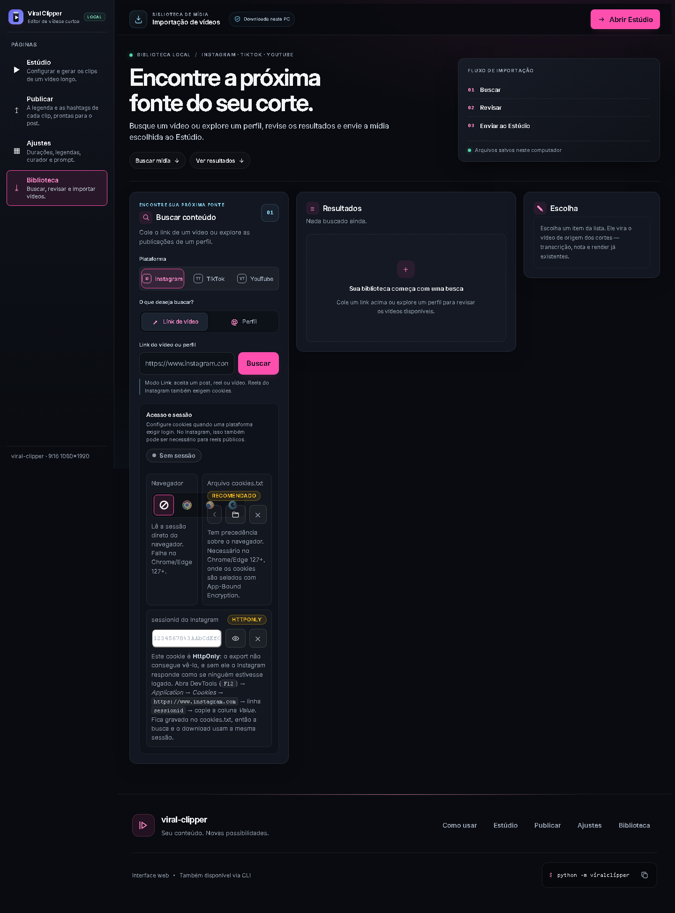

Primeiro cada bloco da página, contado e medido na instância viva. Depois os sete defeitos, cada um com a medição que o prova. Depois como seis produtos de referência resolvem a mesma decisão. Por fim a proposta: uma barra de importação, a sessão fora do caminho, e os resultados como canvas — e o que isso quebra.
A página tem um hero e três painéis que se apresentam como simultâneos, mas descrevem uma sequência. As alturas foram lidas na instância viva, a 1440×1000.
| Bloco | Largura | Altura | O que ele decide de fato |
|---|---|---|---|
| Hero chrome | toda | 410 px | O título, uma linha de apoio, dois atalhos — e um card de fluxo que repete, em três itens, o que os
selos 01/02 dos cards já dizem. |
| Buscar conteúdo | 340 px | 1220 px | Plataforma (3 abas) · modo (2 abas) · URL + Buscar · opções de perfil · e a configuração de sessão
inteira (navegador, cookies.txt, sessionid). |
| Resultados | 469 px | 341 px | A lista de vídeos, a seleção em lote e o bloco de arquivamento do perfil. Em repouso, só o estado vazio. |
| Escolha aside | 291 px | 186 px | O item escolhido vira a fonte dos cortes. Em repouso, só o convite para escolher. |
Onde a altura é gasta dentro do painel de busca:
| Sub-bloco de "Buscar conteúdo" | Altura | Fatia | Quando a pessoa usa |
|---|---|---|---|
| Plataforma + modo | ~120 px | 10% | A cada busca |
| URL + Buscar + dicas | ~180 px | 15% | A cada busca |
| Opções de perfil (oculto no modo Link) | ~90 px | 7% | Ao explorar um perfil |
Acesso e sessão .auth-card | 750 px | 61% | Uma vez — e raramente |
aria-selected
diz qual está ativo. É o padrão correto para "dois modos do mesmo formulário".#resultados-status existe
justamente para a busca não virar vinte anúncios de leitor de tela.#select-box, #arquivar-box):
um botão que baixa "tudo" de nada é pior que nenhum botão.#auth-status com role="status".scrap.css explica por quê:
"escolher qual vídeo cortar sem ver o quadro é adivinhação". Isso é uma decisão acertada e vale
preservar (§04.2, M6).As três colunas medem 340 / 469 / 291 px de largura com 1220 / 341 / 186 px de altura. A coluna da
esquerda termina em y=1630; os dois painéis da direita terminam em y=751 e
y=596. Sobram 879 px de vazio sob os Resultados e 1034 px sob a Escolha — em toda
visita, mesmo com a página cheia.
Medido: .search-card 340×1220 · card[resultados] 469×341 · .pick 291×186 · página 1947 px
O .auth-card mede 750 px (907 px a 1280) e vive dentro do card "Buscar
conteúdo". São três blocos — navegador, arquivo cookies.txt, sessionid do
Instagram — mais três notas de 10–11 px explicando App-Bound Encryption e o caminho do DevTools. É
configuração de uma vez só, ocupando o lugar mais caro da página, no meio do fluxo de quem só quer colar um
link.
Medido: .auth-card 750 px de 1220 px da coluna (61%) · a 1280: 907 px de 1383 px (66%)
O próprio card de fluxo declara a ordem: 01 Buscar → 02 Revisar → 03 Enviar ao Estúdio. Mas as três zonas ficam lado a lado, então duas ficam sempre vazias enquanto se usa a terceira. Em repouso, a página mostra 1773 px de painel para 341 px de conteúdo possível.
Medido: #resultados-sub "Nada buscado ainda." · #pick-body em estado vazio
Abaixo de 980 px o grid vira uma coluna, na ordem do HTML: Buscar (com a sessão dentro) → Resultados → Escolha. Como a sessão está no meio do card de busca, quem está no celular rola a configuração inteira antes de ver um único vídeo.
Medido a 390 px: card de busca 1377 px; os Resultados só começam em y=1917; página 2833 px
O primeiro card começa em y=410. O .scrap-flow-card repete, em três linhas, o
que o rail e os selos 01/02 já dizem. Em ferramenta de uso repetido, isso é chrome pago em cada
visita — e o mercado abre direto na biblioteca (§03).
Medido: primeiro card em y=410; o fluxo aparece 3 vezes (hero, selo do card, atalhos)
Plataforma (3) + modo (2) + URL + Buscar + sessão (11) = 19 controles. Não há hierarquia: o
sessionid do Instagram tem o mesmo peso visual do campo que a pessoa veio usar. A orientação de
plataforma é explícita — acima de ~16 ajustes, o que é de usuário avançado sai para uma camada própria.
Medido: 19 controles simultâneos (2 condicionais ao modo Perfil)
Quando existe lista, o card de Resultados ganha #arq-only, #arq-max,
#btn-arq-viral e #btn-arquivar — um segundo formulário de configuração dentro do
painel que deveria ser a lista. O mesmo padrão de D2, em escala menor: config no meio do resultado.
Medido: #arquivar-box (hidden→visível com lista) com 4 controles + nota
| Produto | Onde mora a importação | O que é o "home" | Onde vive a config/sessão | Resultados |
|---|---|---|---|---|
| Opus Clip | Submissão de um vídeo (Zoom, Drive, YouTube, Rumble) | "All Content" — todos os projetos num lugar | Settings, destino próprio na nav; busca global (OmniSearch) | Grade de clips |
| Vizard | Upload ou URL, dentro da área Clips/Library | "Clips/Library" — uploads + clips gerados + Private Library | Workspace Settings (API key), fora do fluxo | Grade de clips |
| Klap | Upload direto ou link do YouTube | Projetos | Editor → "salvar estilo" (style_preset_id) |
Grade |
| Submagic | Upload / link | Projetos | Brand Kit, na barra lateral | Grade |
| YouTube Studio referência de lista |
— | Lista de conteúdo | Configurações, destino próprio | Linha com miniatura + colunas |
| Design de Settings orientação |
— | — | Global → página própria (linkável, com histórico). Modal só para o contextual. | — |
scrap.css deste projeto já documenta e o que as grades de clips preservam.O critério deixa de ser três painéis simultâneos e passa a ser uma sequência em duas zonas: o comando de importação no topo, e o par lista ↔ detalhe abaixo — que é como o mercado organiza.

y=751 e y=596; a página vai até y=1947.| # | Mudança | Resolve | Valor | Custo | O que quebra |
|---|---|---|---|---|---|
| M1 | Barra de importação. Plataforma + modo + URL + Buscar numa faixa de uma linha, no topo, em vez de dois grupos empilhados dentro de um card. | D3, D6 | alto | médio | O grid do scrap.css (os três regimes de .scrap-grid), os ids
#h-busca/#h-resultados e os testes que casam o markup de busca. |
| M2 | A sessão sai do card e vira um disclosure. O .auth-card inteiro vai para dentro de
um <details> fechado por padrão, na faixa, com o estado visível
("Sessão: cookies.txt"). Os campos continuam no DOM. |
D2, D4, D6 | alto | baixo | Pouco: os campos seguem presentes, então os testes de presença continuam passando. Exige um teste novo para a dobra e para o resumo de estado. |
| M3 | Resultados viram o canvas. A lista ocupa a maior área; a toolbar (selecionar todos · baixar selecionados · baixar perfil) fica presa ao topo da lista, não num bloco acima que rola embora. | D1, D3, D7 | alto | médio | A ordem dos blocos #select-box/#arquivar-box; os testes de layout do card
de Resultados. |
| M4 | A Escolha vira rail sticky. Encosta no topo e acompanha a rolagem, ao lado da lista — em vez de uma terceira coluna que passa o tempo vazio. | D1, D3 | médio | baixo | O position: sticky exige o pai com altura definida (o mesmo cuidado que já custou caro
neste projeto) — medir no navegador antes de assumir. |
| M5 | Hero enxuto. Fica o h1 e uma linha de apoio. O .scrap-flow-card sai —
o rail e os selos de etapa já carregam a informação. |
D5 | médio | baixo | O #scrap-title permanece (há teste de heading). Sai só o card de fluxo. |
| M6 | Lista de mídia com colunas alinhadas. Mantém a miniatura (a decisão é visual) e alinha os
números comparáveis — views, tipo, duração — em colunas com tabular-nums. |
comparação | médio | baixo | O markup de resultCard() em scrap.js. Não toca rota nem contrato. |
Uma proposta anterior sugeria trocar os cards de resultado por uma tabela de texto, pelo argumento
correto de que "comparar é o trabalho". O argumento vale — mas a conclusão não, e o próprio código deste
projeto já diz por quê: "escolher qual vídeo cortar sem ver o quadro é adivinhação"
(scrap.css, §CARD DE RESULTADO).
A recomendação é a lista de mídia (M6): a linha mantém a miniatura e ganha as colunas alinhadas. Isso pega os dois lados — o reconhecimento visual do card e a comparação da tabela — e é exatamente o modelo do YouTube Studio e das grades de clips do Opus Clip e do Vizard. Uma tabela de texto pura regrediria numa decisão que a página já acertou.
M2 — tirar a sessão de dentro do card de busca. É a mudança de maior valor pelo menor custo: devolve 750 px da coluna de trabalho, some com o pior caso do celular (D4), derruba quase um terço dos controles visíveis (D6) — e é markup + CSS puro: não toca rota, contrato de servidor nem chaves persistidas. É também o que o mercado trata como padrão: config-once sai do fluxo. M1 e M3 vêm depois, porque são estruturais e mexem no grid.
role="tab" e setas. É semântica
correta e testada.#resultados-status fica
como está.scrap.html continua servindo /biblioteca, e o arquivo mantém o nome
scrap — é decisão documentada no server.py.index.css. Ela carrega shared.css +
scrap.css de propósito; trocar a folha mexeria na cascata da página inteira.opusclip-c3e48c12.mintlify.app/docs/article/opussearchdocs.vizard.ai/docs/quickstartdocs.klap.app/stylingcare.submagic.codesignpixil.com/blog/saas-settings-page-design · phoenix.studio/blog/saas-settings-page-ux-2026gregpreece.com/articles/opus-clip-vs-klap127.0.0.1:7755, viewport 1440×1000
(e 1280, 1024, 768, 390 para o comportamento responsivo). Sonda em
sticky-probe/biblio_layout.js. Pesquisa de mercado via Exa (agent-reach). Nenhum arquivo do
painel foi alterado para produzir este relatório.